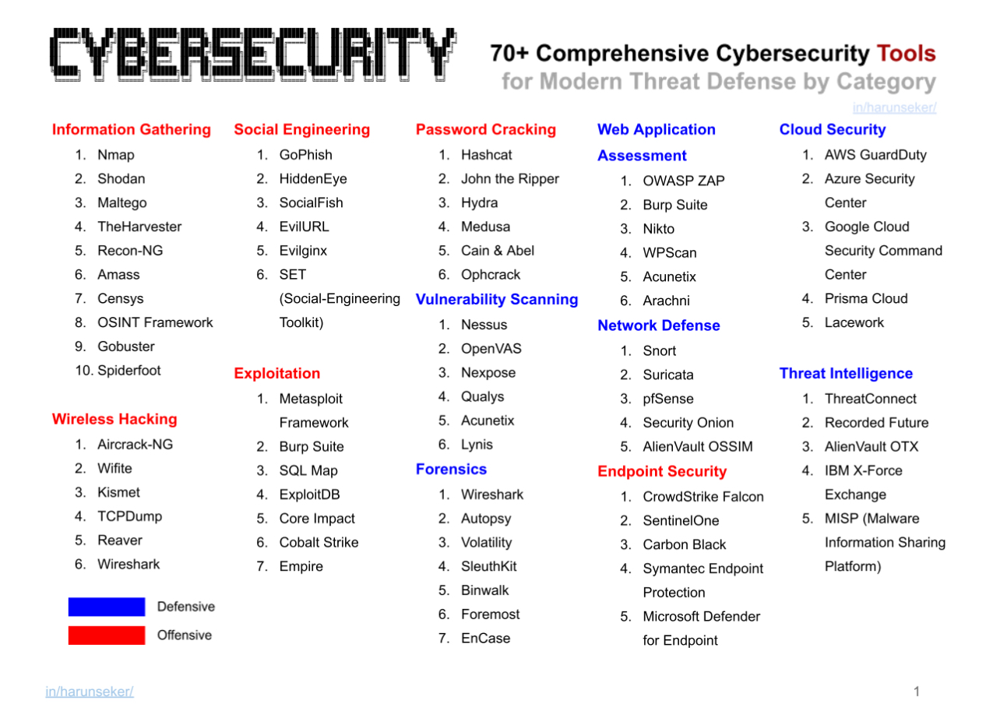

Surveillance & detection
Deploiement IDS / IPS avec Suricata et Snort
Ce projet est centre sur la surveillance du trafic reseau et la detection des activites malveillantes. L'objectif etait de mettre en place un environnement Linux capable d'analyser des flux, de declencher des alertes et d'ameliorer la visibilite sur les comportements suspects.
J'ai travaille sur l'utilisation de Suricata et Snort, l'etude de paquets reseau avec Wireshark et la creation de regles personnalisees pour mieux identifier certaines intrusions ou anomalies.
- Suricata
- Snort
- Linux
- Wireshark
- Analyse reseau